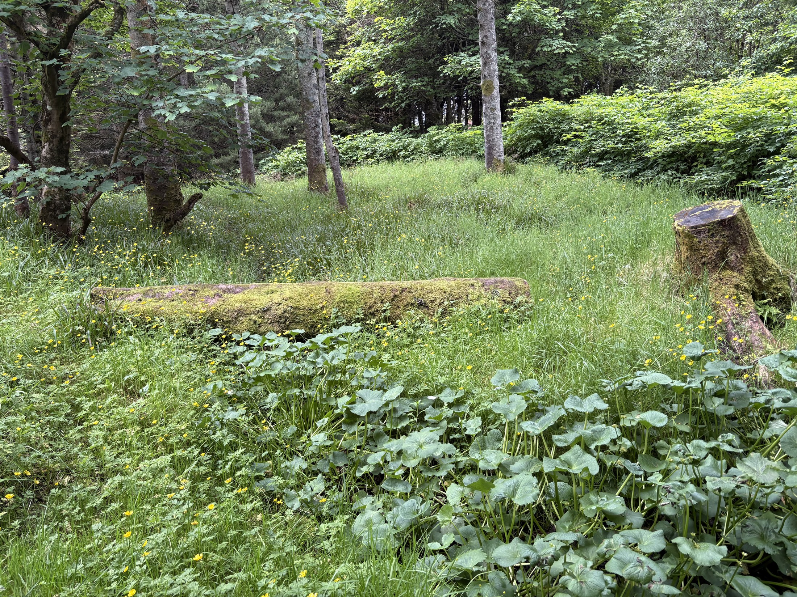
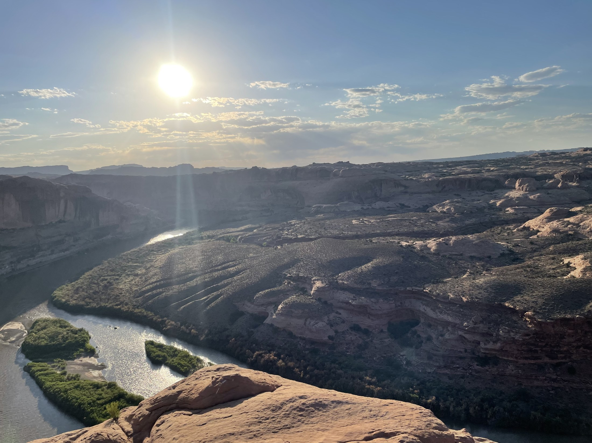
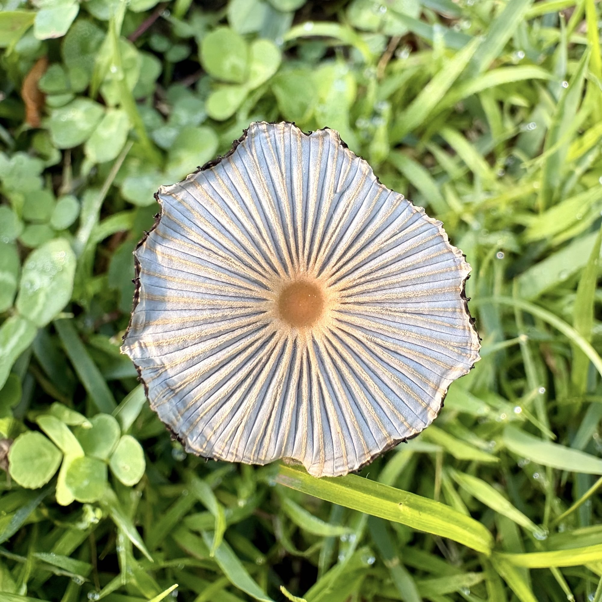
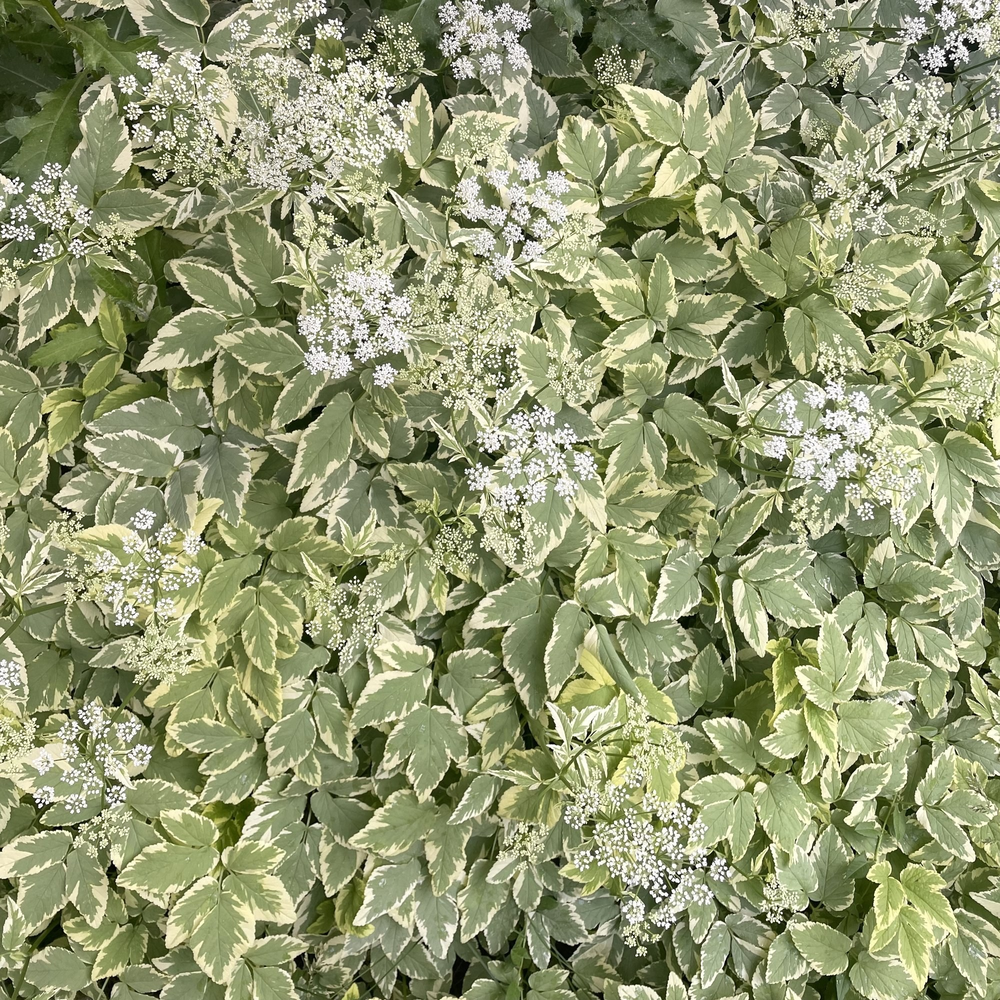
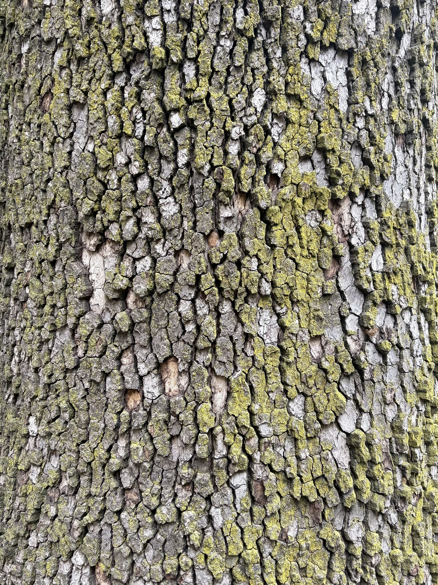
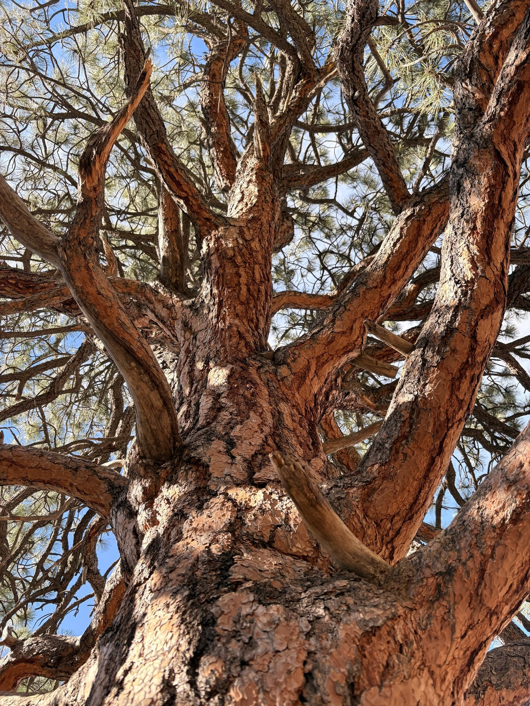

Photos

Viðarlundin í Havn
Viðarlundin í Havn is the largest park in Tórshavn, the capital of the Faroe Islands. It was planted in 1903 as part of a determined effort to bring more trees to a country with very little natural forest, a challenge shaped by strong winds, alpine tundra at higher elevations, thin soils, early land clearing for agriculture, and centuries of sheep grazing that kept young saplings from taking hold. More than a century later, the park has grown into a thriving green refuge in the heart of the city, a lasting testament to that patient work and a beloved gathering place for the people of Tórshavn.

Moab, Utah
The dry sandstone landscape around Moab has proven remarkably good at preserving the past, holding onto dinosaur tracks and fossilized bones in fine detail. Thanks to the conservation work of places like Arches National Park, these remnants are protected today so that future generations can keep exploring and learning from them.

Pleated Inkcap
Parasola plicatilis, often called the pleated inkcap or Japanese parasol mushroom, is a small, delicate fungus found across lawns and grassy areas throughout much of North America and Europe. Its cap unfurls into a fan of deep pleats radiating from a warm orange-brown center, a structure so thin and paper-like that it barely holds together, giving the mushroom its parasol-like look. It tends to appear overnight after rain, pushing up through damp grass in scattered troops, only to collapse and disappear again within a single day as the sun dries it out. That brief presence is part of what makes it special: a small reminder of how much quiet activity is happening underground in the mycelial networks beneath our lawns, most of it invisible for the majority of their lifecycle.

Variegated Bishop's Weed
Variegated bishop's weed (Aegopodium podagraria 'Variegatum') is a shade-loving groundcover in the carrot family, recognized by its cream-and-green mottled leaves and the small white flower clusters it sends up in early summer. Native to Europe and western Asia, it was brought to North America generations ago as an ornamental and has since become a familiar sight in shaded gardens. It spreads readily by underground rhizomes, forming a thick, low carpet that stays useful and attractive with very little upkeep, though gardeners often need to manage its boundaries to keep it from wandering into surrounding beds. In June, its foliage is at its brightest, and the airy white umbels scattered across the top give the whole patch a light, textured look against the season's greenery.

Moss on Bark
Moss that grows on tree bark is a quiet example of two very different organisms finding a way to coexist. Unlike parasitic growth, moss doesn't feed on the tree at all; it simply uses the bark's rough, textured surface as a stable place to anchor itself, drawing moisture and nutrients from rain, dust, and the air rather than from the tree beneath it. Mosses lack true roots, relying instead on tiny rhizoids that grip into bark crevices, which is why they tend to favor older trees with deeply furrowed or porous bark that holds moisture longer, and why they're often thicker on the shaded, damp side of a trunk. Over time, a mossy patch becomes its own small ecosystem, sheltering insects, retaining humidity, and softening the surface it grows on, a small green reminder that even something as solid looking as bark is really just another habitat waiting to be filled.

Ponderosa Pine
Ponderosa pine is one of the great trees of the American West, its thick, puzzle-plated bark turning a warm orange-cinnamon as it matures, smelling faintly of vanilla to anyone who leans in close. Deep taproots and fire-adapted bark have let these trees stand for centuries across the foothills and mountains, from British Columbia down into Mexico, quietly shaping the character of the landscapes they grow in. Along Colorado's Front Range, ponderosa forests have long offered shade, habitat, and a gathering place for the people who live among them, a living reminder of just how much resilience a tree can carry.